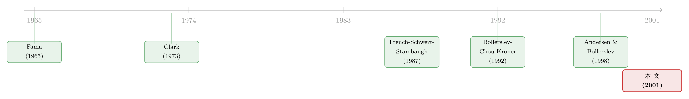

把'看不见的波动率'变成一张可以直接称重的表
本文读的是 Andersen, Bollerslev, Diebold & Ebens (2001, JFE)：当你把一天切成 79 段、用五分钟收益的平方一段段加起来，波动率就不再是一个需要靠模型猜出来的潜变量，而是一个几乎可以「直接观测」的数。一旦能观测，它的分布就露出了惊人的规律——已实现方差极度右偏，但它的对数几乎是正态的；用它把收益标准化之后，那条出了名的「肥尾」也奇迹般地消失了。
1 一个困扰了三十年的「测不准」
波动率是金融学里最重要、却也最尴尬的一个量。
说它重要，是因为资产定价、资产配置、风险管理——几乎每一块的核心都绕不开它。说它尴尬，是因为它看不见。你能观测到价格，能观测到收益，可「这一天的波动到底有多大」，从来没有人能直接读出一个数来。
于是过去三十年，整个领域都在做同一件事：给这个看不见的东西套一个模型。要么是 自回归条件异方差 (ARCH) 和它的各路子孙 GARCH，要么是 随机波动率 (stochastic volatility, SV) 模型，要么从期权价格里反推 隐含波动率 (implied volatility)。这些办法都很聪明，但它们有一个共同的软肋——结论的对错，取决于模型设得对不对。GARCH 假设错了，你量出来的波动率就错了;隐含波动率还要再背上一个「波动率风险的市场价格」的包袱。模型五花八门、互相打架,而每换一个模型,前人的「经验事实」就要重新被质疑一遍。
那有没有一条不依赖模型的路?
最朴素的想法是:既然方差是收益平方的期望,那我就直接用当期收益的平方来当这一天波动率的估计。它确实是无偏的。可惜,它噪声大得离谱——单独一个收益平方,几乎全是测量误差,真正的波动信号被淹没得干干净净,根本没法用来做可靠的推断。
僵局就卡在这里:要么依赖模型(有偏的风险),要么用收益平方(噪声大到没法用)。本文要做的,就是把这个僵局拆开。
2 真正关键的一步:把一天切成 79 段
突破口,藏在一个连续时间金融里早已成熟、却一直没被这样用过的结果里——二次变差 (quadratic variation)。
先把直觉讲清楚。假设(对数)价格 \(p_t\) 服从一个连续时间随机波动率扩散过程:
$$dp_t = \mu_t \, dt + \Omega_t \, dW_t$$
这里 \(W_t\) 是标准布朗运动,漂移 \(\mu_t\) 和正定的扩散矩阵 \(\Omega_t\) 都可以随时间变化。给定从 \(t\) 到 \(t+h\) 这一段路径上 \(\mu\) 和 \(\Omega\) 的实现值,这 \(h\) 期的连续复利收益 \(r_{t+h,h}\equiv p_{t+h}-p_t\) 服从一个条件正态分布:
注意看方差那一项 \(\int_0^h \Omega_{t+\tau}\,d\tau\)。它不是某个瞬时值,而是这一整段时间里波动的累积——这就是所谓的 积分波动率 (integrated volatility)。它才是「这一天波动到底有多大」这句话的严格数学表达。在随机波动率的期权定价文献里,这个量早就是主角:一份期权的价格,本质上就取决于标的资产在期权存续期内积分波动率的分布。
问题是,\(\Omega_{t+\tau}\) 看不见,这个积分自然也看不见。可二次变差理论给了一个漂亮的结果:在很弱的正则条件下,
$$\sum_{j=1,\dots,[h/\Delta]} r_{t+j\Delta,\Delta}\, r'_{t+j\Delta,\Delta} \;-\; \int_0^h \Omega_{t+\tau}\,d\tau \;\longrightarrow\; 0$$
几乎必然成立,只要抽样频率不断加密,也就是 \(\Delta\to 0\)。
把这个式子翻译成人话:只要你把高频收益的平方(和叉积)一段段加起来,当采样间隔趋于零时,这个和就会几乎必然地收敛到那个看不见的积分波动率。换句话说,采样得足够密,测量误差就会被「磨」到几乎为零。
这就是整篇论文的阿基米德支点。它和收益平方的区别在哪里?收益平方只是「一段」的平方,噪声压倒信号;而把一天切成很多很多小段、再求平方和,大数定律就替你把噪声平均掉了。更妙的是,当区间 \(h\) 越短,那个漂移项 \(\int \mu\,d\tau\) 的影响就越小——均值被有效地「碾平」了,你不必再去操心条件均值的设定。
这一步之所以革命,是因为它把一个潜变量估计问题,变成了一个描述统计问题。波动率一旦「可观测」,你就不必再去拟合任何 ARCH 或 SV 模型,直接拿它的时间序列来算均值、偏度、自相关——就像对待任何一个看得见的数据那样。
3 五分钟:在「无穷小」与「现实」之间的妥协
理论说 \(\Delta\to 0\) 越小越好。可现实里,股票不是连续成交的。
本文用的是 TAQ (Trade And Quotation) 数据库,取了道琼斯工业平均指数 (DJIA) 的 30 只成分股,样本从 1993 年 1 月 2 日到 1998 年 5 月 29 日,共 1,366 个交易日。即便是这些全美最活跃的股票,全样本的中位成交间隔也有 23.1 秒(最快的默克 MRK 7 秒,最慢的联合技术 UTX 54 秒)。你没法真的把 \(\Delta\) 推到无穷小。
更麻烦的是,真把频率推得太高,市场微观结构 (market microstructure) 的噪声就会反过来污染你:价格离散化、买卖价差的来回跳动 (bid–ask bounce)、非同步交易……这些在日度数据里无关紧要的东西,在秒级数据里会把分布搅得面目全非。(关于「到底该多频繁地采样」这件事本身,后来 Bandi 与 Russell 等人写了整整一篇文章去回答,可参见《一秒一笔的数据,为什么只敢拿 5 分钟用一次?》。)
于是作者做了一个如今已成标准的折中:用五分钟收益。从 9:30 到 16:05,一天正好切出 79 段五分钟收益,对应 \(\Delta=1/79\approx 0.0127\)。五分钟足够短,让连续记录渐近的精度站得住脚;又足够长,让微观结构的干扰不至于喧宾夺主。为了进一步清掉买卖价差和非同步交易带来的负序列相关,他们先对每只股票的五分钟收益拟合一个 MA(1) 模型再去残差——所有 30 只股票的移动平均系数都是负的,中位数 -0.214,正好印证了价差来回跳动的方向。最终得到的,是 \(79\times 1366 = \) 107,914 个五分钟收益。
把这些平方和叉积按天加起来,就得到了每天的已实现协方差矩阵:
$$\text{Cov}_t \equiv \sum_{j=1,\dots,1/\Delta} r_{t+j\Delta,\Delta}\, r'_{t+j\Delta,\Delta}$$
对角线上的元素 \(v_{j,t}^2\) 就是第 \(j\) 只股票的已实现日方差,它的对数标准差记作 \(lv_{j,t}\equiv \log(v_{j,t})\),非对角元素归一化后就是已实现相关系数 \(Corr_{ij,t}\)。30 只股票,于是有了 30 条波动率序列和 435 对协方差/相关系数序列——全部「可观测」,全部可以直接做统计。
4 反转:把方差取个对数,正态分布就回来了
现在,激动人心的部分来了。波动率既然成了数据,它长什么样?
先看一个意料之中的事实。 已实现日方差 \(v_{j,t}^2\) 的分布极度右偏、尖峰肥尾:跨 30 只股票,样本偏度的中位数高达 5.609,峰度中位数达到惊人的 143.6。这其实有点反直觉——毕竟每个 \(v_{j,t}^2\) 都是 79 个数加出来的,按中心极限定理不是该趋近正态吗?但日内收益有很强的依赖性,标准的中心极限论证在高频场景下逼近得极差。所以方差本身,是个「歪」得很厉害的东西。
接着,一个自然的问题是: 既然方差这么不听话,那它的对数呢?
奇迹出现了。已实现对数标准差 \(lv_{j,t}\) 的样本偏度中位数,从方差的 5.609 直接掉到了 0.192;虽然峰度仍略高于正态的 3,但正态的近似已经好得让人无话可说。已实现对数标准差,近似服从正态分布。 这意味着已实现方差本身,近似服从一个对数正态分布。
然后,真正关键的一步在于这个反转的下半场。 如果波动率(标准差)真的近似对数正态,而收益又是以波动率为混合变量的正态混合,那么——把每日收益用当天的已实现标准差去标准化,会发生什么?
按教科书,日度股票收益是出了名的肥尾。本文样本里,原始日收益的样本峰度中位数是 5.416,远超正态的 3。可一旦用已实现标准差标准化,\(r_{j,t}/v_{j,t}\) 的峰度中位数掉到了 3.129——几乎就是正态!(作为参照,\(T=1366\) 时峰度的两倍标准误约为 0.133。)那条困扰了金融学三十年的肥尾,不是被某个花哨的模型「拟合」掉的,而是被一个直接观测到的波动率干干净净地除掉了。
这跟传统做法形成了刺眼的对比:如果你用 GARCH 或 SV 估出来的「一步向前条件方差」去标准化收益,得到的残差通常仍然肥尾。差别就在于,模型给的是对未来的「预测方差」,而本文给的是当天真实发生的「已实现方差」。
这一组事实——方差右偏、对数标准差正态、标准化收益正态、相关系数也近似正态——在 30 只 DJIA 股票里几乎无一例外地成立,而且在另选的 30 只活跃股的对照样本里同样成立。这正是「正态混合」这一经典刻画(Clark, 1973)在高频数据上最干净的一次实证落地。
(顺带一提,标准化收益近似正态,反过来也是一个不太有力、但很优雅的「跳跃检验」:如果价格过程里有跳跃,这个标准化收益就不该是正态的。)
5 不止于「长什么样」:它还会怎么动
把分布的「静态长相」讲完,作者笔锋一转,去问它的动态。
第一个发现是大家早有预期的:所有波动率序列都剧烈地随时间起伏,且有极强的依赖性——今天波动大,明天大概率也大,这就是著名的「波动率聚集」。
但本文给出的刻画更精确:这种依赖不是普通 GARCH 那种几天就衰减完的「短记忆」,而是衰减得极慢的长记忆 (long memory)。用分数阶整合 (fractional integration) 来描述,整合阶数 \(d\) 的估计大约在 0.35 附近——这个 \(d\) 介于 0(短记忆)和 1(单位根)之间,意味着自相关以双曲速率而非指数速率衰减。更漂亮的是,这个长记忆特征在时间聚合下表现出非常精确的标度律 (scaling law):把日度波动加总成多日波动,方差随时间跨度的增长服从一条干净的幂律。
第二个发现,则是对一桩老公案的「降温」。杠杆效应 (leverage effect)——即过去的负收益比同等的正收益更能推高未来波动——在数据里确实统计显著,但本文强调,从经济意义上看它相当不重要。有意思的是,同样的不对称性也出现在已实现相关系数上:坏消息来时,股票之间不仅更波动,还更「抱团」。
第三,把多元结构摊开看,波动率之间有系统性的「齐涨齐跌」:当一批股票的方差高时,它们彼此之间的相关系数也高;反之亦然。这种结构,强烈地指向一个潜在因子结构 (latent factor structure)——也就是说,几十只股票的波动率背后,可能只由少数几个共同因子驱动。这一点和后来研究「相关性在熊市里抱团」的文献遥相呼应(可参见《你以为分散了风险,可一到崩盘那天,它们全抱成了团》,其作者 Ang 与 Chen 的工作正在本文参考文献之列)。
6 文献脉络
把这篇论文放回它所在的河流里,脉络其实很清晰。
源头是关于「投机价格分布」的世纪追问。Mandelbrot (1963) 和 Fama (1965) 主张用稳定帕累托分布刻画收益的肥尾;随后 Praetz (1972)、Blattberg 与 Gonedes (1974) 转向有限方差的正态混合(如 student-t)。而正态混合的微观机制,被 Clark (1973) 用一个「下属随机过程」(subordinated process) 模型点破:收益之所以肥尾,是因为它是一个以交易量/信息流为混合变量的正态混合——肥尾的根源,是那个看不见的波动率本身在变。本文标准化收益回归正态的结果,正是 Clark 假说三十年后最直接的验证。
中段是「用低频数据近似已实现波动率」的尝试。French, Schwert & Stambaugh (1987) 用日收益构造月度已实现波动率,是这条路的先行者;但他们没有给出严格的理论依据,因为那套扩散论证恰恰依赖于「收益区间趋于零」。与此同时,Bollerslev, Chou & Kroner (1992) 综述的 ARCH 大军走的是另一条「参数建模」的路。

临门一脚,来自高频数据的可得性与连续时间渐近理论的结合。Andersen & Bollerslev (1998) 先用高频已实现波动率,替「标准波动率模型其实预测得很准」这件被低估的事正了名;紧接着,同一批作者(ABDL, 2001a)在汇率上系统地建立了已实现波动率的分布刻画。本文,就是把这套方法论从两个汇率,扩展到了一篮子个股——这是它在这条脉络里的精确坐标:不是发明了二次变差,而是第一次把「波动率可观测」这件事,在股票横截面上做成了一组干净、可复制、model-free 的「程式化事实」。它直接为后来的已实现波动率建模与预测(参见《5 分钟的数据,到底比一天的数据贵多少钱?》)铺好了路。
7 评论与延伸(Q&A + 研究方向)
(a) 几个可能的疑问
Q:已实现方差和「收益平方」到底差在哪?不都是平方和吗?
差在采样频率。收益平方是「一段」的平方,几乎全是噪声;已实现方差是把一天切成 79 段、各自平方再求和。前者无偏但方差巨大,后者随着 \(\Delta\to 0\) 测量误差趋于零。本质上,是大数定律替你把噪声平均掉了。
Q:为什么偏偏选五分钟,而不是一分钟或一天?
这是一个偏差—方差的折中。频率越高,渐近精度越好(方差小),但价格离散、买卖价差跳动等微观结构噪声会引入偏差;频率越低噪声越小,但又回到了「样本太少、噪声大」的老问题。五分钟是当时被广泛接受的甜区。作者还先做了 MA(1) 滤波来清掉价差导致的负序列相关。
Q:标准化收益变正态,是不是说明收益里根本没有跳跃?
不能下这么强的结论。本文也承认,把它当作跳跃的「综合检验」其实并不灵敏。标准化收益近似正态,只能说在五分钟、日度这个尺度上,正态混合是个很好的近似;它不排除更高频或极端时段存在跳跃。后来「区分扩散与跳跃」成了独立的研究课题。
Q:既然波动率「可观测」了,是不是 GARCH/SV 模型就没用了?
不是。已实现波动率给的是事后(ex post)已经发生的波动;而风险管理、定价真正需要的是事前(ex ante)的预测。本文的贡献是给出了波动率的真实分布特征(对数正态、长记忆、因子结构),从而指导人们去建更好的预测模型,而不是取代建模本身。
Q:\(d\approx 0.35\) 的长记忆,会不会只是结构性断点伪装出来的假象?
这是长记忆文献里永恒的争论——缓慢均值回归和「带 regime 切换的短记忆」在有限样本里很难区分。本文用时间聚合下非常精确的标度律来佐证长记忆的真实性(伪长记忆通常给不出这么干净的幂律),但严格的证伪仍依赖更长样本和更强的检验。
Q:30 只 DJIA 巨头,能代表「全市场」吗?
这是最值得担心的外部有效性问题。作者的回应是:他们在另选的 30 只活跃股上重做了全部分析,结论高度吻合。但 DJIA 和「活跃股」共享一个前提——高流动性。对于交易稀疏的小盘股,五分钟里可能根本没几笔成交,已实现波动率的构造会严重失真,本文的事实未必成立。
(b) 几个可能的研究问题与提案
1. 把已实现波动率搬到公司债市场。
【经济故事】股票的高频已实现波动率已是成熟工具,但公司债的「波动率」几乎无人能直接观测——因为债券交易极其稀疏,大量「零交易」日,五分钟里根本没有成交。如果能为流动性较好的债券(或债券 ETF)构造一个稳健的已实现波动率,就能首次用 model-free 的方式刻画信用市场的波动分布与长记忆。 【可行性】中。数据靠
TRACE(逐笔成交)。识别难点在于债券的非同步、稀疏交易,需要用 ETF 或指数层面、或借助 Lo-MacKinlay 式的去噪来缓解。doable,但要诚实面对「采样间隔根本压不下去」这一硬约束。
2. 外资持有比例与个股已实现波动率的因子结构。
【经济故事】本文发现波动率背后有潜在因子结构。一个自然的问题是:谁的持仓塑造了这个共同因子?外国投资者持仓高的股票,其已实现波动率是否对全球(而非本地)的波动因子载荷更高?这能把「资本流动如何传导波动」量化到个股层面。 【可行性】中。需要个股层面的外资持仓(如各国央行/监管的持仓披露,或 FactSet 机构持仓)+ 高频价格。识别上可借助「可投资度」放开这类自然实验作为外生冲击。
3. 已实现相关系数的不对称性,能不能用来预测流动性危机?
【经济故事】本文顺手发现,坏消息来时相关系数也会跳升(相关性的「杠杆效应」)。如果把已实现相关矩阵的「抱团程度」做成一个实时指标,它会不会先于价格预警市场流动性的枯竭? 【可行性】高。所需只是高频价格,方法是本文现成的已实现相关矩阵 + 一个聚合度量(如平均相关、最大特征值占比),再去预测后续的流动性指标。直接可做,且和「平均相关预测市场收益」一脉相承(参见《市场会涨还是会跌?别盯着波动率,去看股票们「有多齐心」》)。
4. 长记忆参数 \(d\) 在横截面上的差异从何而来?
【经济故事】本文报告了一个「典型」的 \(d\approx 0.35\),但不同股票的 \(d\) 显然有差异。是什么公司特征(规模、机构持股、分析师覆盖、信息环境)决定了一只股票波动率「记性」的长短?这能把抽象的长记忆参数和可观测的公司基本面连起来。 【可行性】高。逐股估 \(d\)(GPH 或局部 Whittle),再对公司特征做横截面回归。数据齐全,挑战在于 \(d\) 的估计本身有较大噪声,需要足够长的样本。
参考文献
- Andersen, T.G., Bollerslev, T., Diebold, F.X., Ebens, H. (2001). The distribution of realized stock return volatility. Journal of Financial Economics 61(1), 43–76.
- Andersen, T.G., Bollerslev, T. (1998). Answering the skeptics: yes, standard volatility models do provide accurate forecasts. International Economic Review 39(4), 885–905.
- Andersen, T.G., Bollerslev, T., Diebold, F.X., Labys, P. (2001a). The distribution of realized exchange rate volatility. Journal of the American Statistical Association 96(453), 42–55.
- Bollerslev, T., Chou, R.Y., Kroner, K.F. (1992). ARCH modeling in finance: a selective review of the theory and empirical evidence. Journal of Econometrics 52(1–2), 5–59.
- Clark, P.K. (1973). A subordinated stochastic process model with finite variance for speculative prices. Econometrica 41(1), 135–155.
- Fama, E.F. (1965). The behavior of stock market prices. Journal of Business 38(1), 34–105.
- French, K.R., Schwert, G.W., Stambaugh, R.F. (1987). Expected stock returns and volatility. Journal of Financial Economics 19(1), 3–29.
- Blattberg, R.C., Gonedes, N.J. (1974). A comparison of the stable and student distributions as statistical models for stock prices. Journal of Business 47(2), 244–280.
- Ang, A., Chen, J. (2000). Asymmetric correlations of equity portfolios. Working paper, Columbia University.